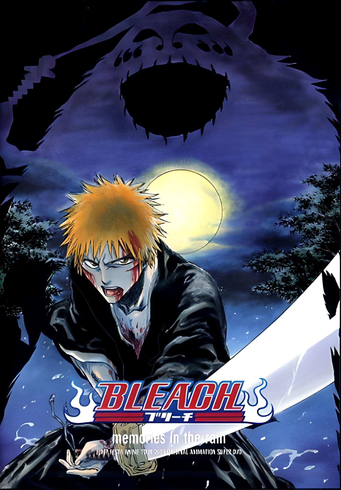
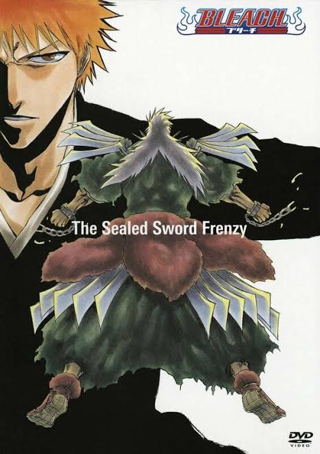
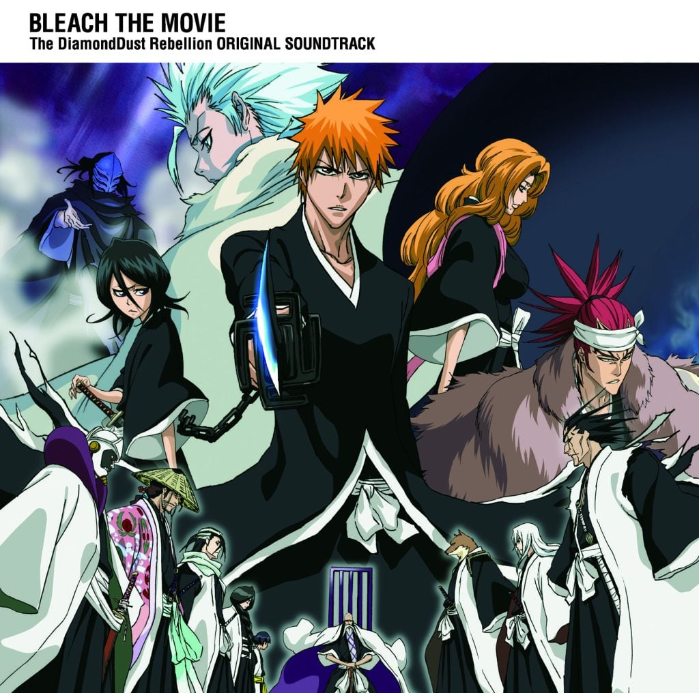
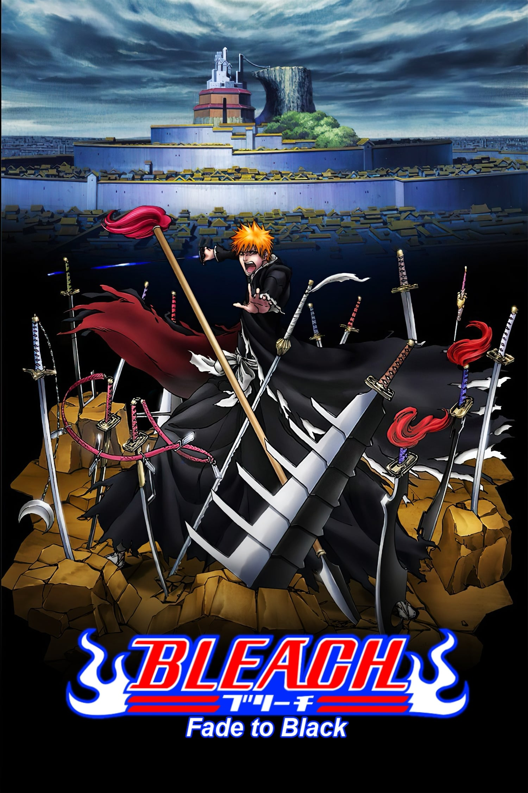
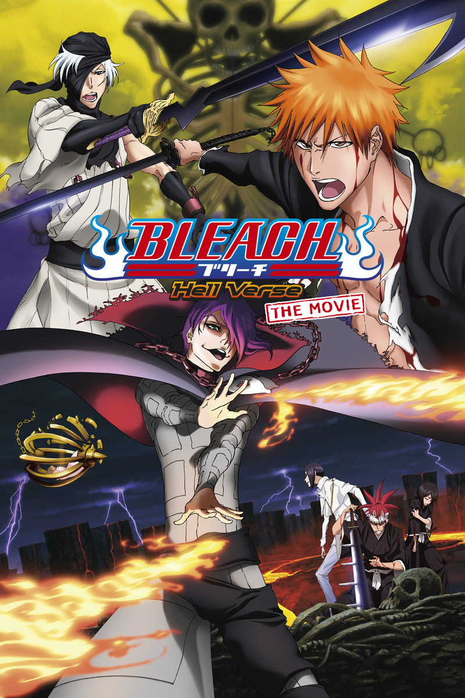
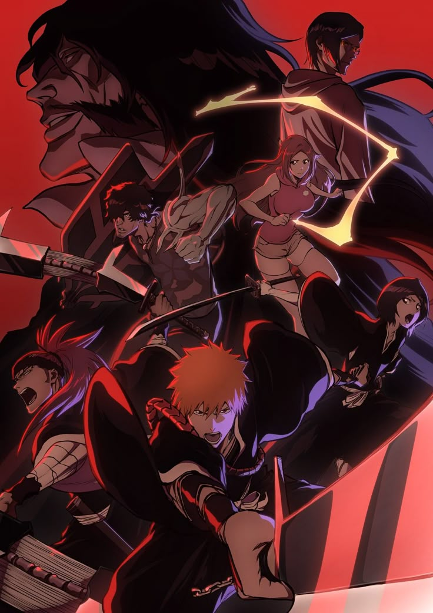

Bleach (TV Anime, 2004-2012)
The original 366-episode series. Ichigo gains Soul Reaper powers from Rukia and battles Hollows, rogue Captains and Aizen's Arrancar army to protect his friends.

Bleach: Memories in the Rain (OVA, 2004)
A Jump Festa special where Ichigo faces the Hollow Grand Fisher, tied to his painful memories of his mother's death on a rainy day.

Bleach: The Sealed Sword Frenzy (OVA, 2006)
A dangerous prisoner escapes from Soul Society's prison and runs loose in Karakura Town, and Ichigo and Captain Hitsugaya must stop him.

Bleach the Movie: The DiamondDust Rebellion (2007)
When a sacred royal treasure is stolen, Captain Hitsugaya is branded a traitor and Ichigo sets out to uncover the truth and clear his name.

Bleach the Movie: Fade to Black (2008)
Two mysterious siblings attack Soul Society and erase Rukia's memories, leaving Ichigo as the only one who still remembers her.

Bleach the Movie: Hell Verse (2010)
Sinners from Hell kidnap Ichigo's sister Yuzu, forcing him to descend into Hell itself to bring her back.

Bleach: Thousand-Year Blood War (2022-present)
The Quincy army led by Yhwach launches an invasion of the Soul Society, forcing Ichigo and the Soul Reapers into their deadliest war yet.